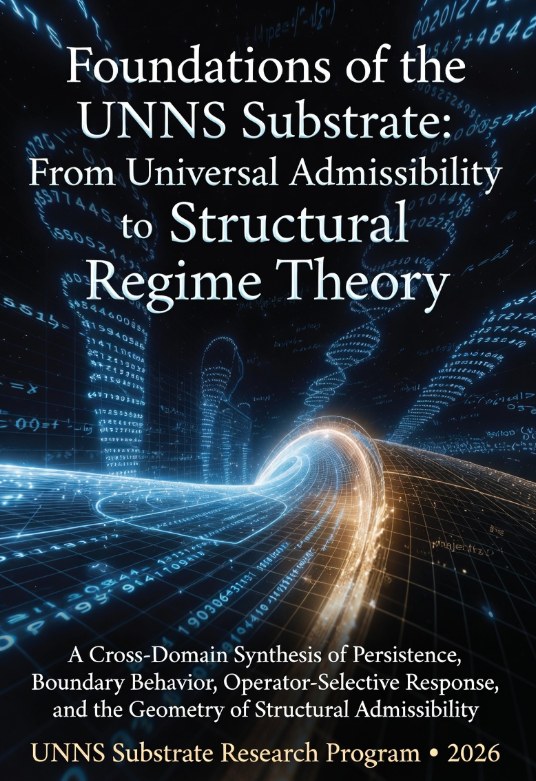
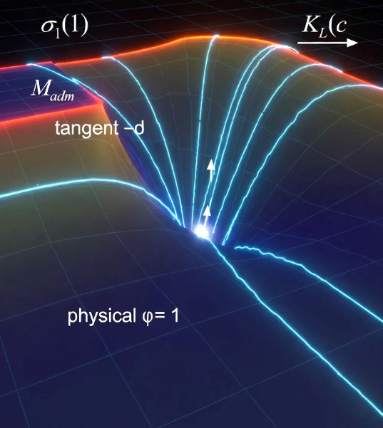
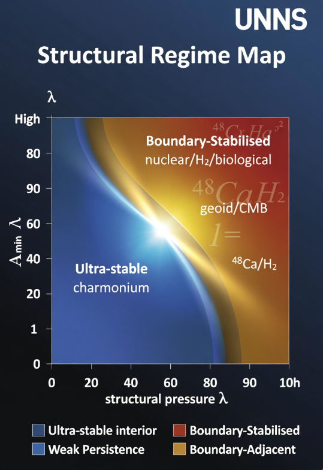
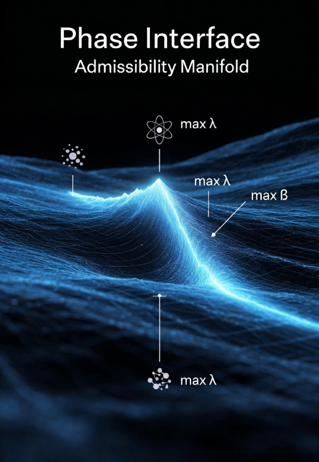

A Cross-Domain Synthesis of Persistence, Boundary Behavior,
Operator-Selective Response, and the Geometry of Structural Admissibility
There exists a universal structural law that decides which ordered relational configurations can persist as stable observables — and it sits logically prior to dynamics, symmetry, or chance. This is the central claim of the UNNS Substrate programme, now fully formalised in a 62-page foundation document.

Quantum mechanics tells you how a hydrogen atom's electrons evolve. General Relativity tells you how spacetime curves around a planet. Thermodynamics tells you which equilibria a system settles into. What none of them tell you — what they all silently assume — is that the systems they describe already exist as stable, ordered relational configurations.
The UNNS programme asks the question those theories skip: which ordered configurations can persist as stable structures in the first place? The answer is formalised in a single structural inequality, the Universal Structural Law (USL), and the geometric framework it generates: the admissibility manifold 𝓜adm.
The Universal Structural Law is not a dynamical law, a conservation law, or a symmetry principle. It is a structural selection law — a constraint on which relational configurations can persist as stable physical structures, operating at the pre-dynamical layer that precedes and conditions all dynamical, geometric, and thermodynamic descriptions.
Physical systems of all kinds produce ladders: ordered sequences of ranked observable values — energy levels, spectral gaps, harmonic coefficients, fitness landscape steps. The USL is an inequality on any such ladder:
inv(Pε ; L) ≤ ν(Vε(L))
Here, inv(Pε; L) counts the invariant persistent structure of ladder L at threshold scale ε, and ν(Vε(L)) is the total variation capacity at that scale. The admissibility score at scale κ is:
Aκ(L, c) = inv(Pε ; L) / ν(Vε(L)) ≤ 1
The mean structural pressure across a 17-point κ-grid:
ρ̄(L) = (1/|K|) Σκ∈K Aκ(L)
This inequality is not a tautology. Adversarial synthetic ladders violate it systematically — which is precisely what confirms it is non-trivial. In the physical corpus of over 1,500 ladders and 150,000 assessments, not a single persistent physical system at physical parameter values has produced a violation. The range of structural pressure across the corpus spans 43-fold — from ρ̄ ≈ 0.018 (N₂/HCl molecular) to ρ̄ ≈ 0.773 (⁴⁸Ca nuclear under αₛ). This is not uniform sampling of the admissible space. It is a structured distribution.

The framework introduces the Selection Operator Σ : S → {0, 1}, the first formal object that unifies the empirical admissibility result with the operator framework:
Σ(S) = 1 if Aκ(S, c) ≤ 1 ∀κ, ∀c
Σ(S) = 0 otherwise
The admissibility manifold is then directly induced as the pre-image of 1:
𝓜adm := Σ-1(1) = Sadm
Σ is derived, not postulated. It is the composition of the operator family {Oκ} over the tested deformation domain C. Selection is the observable action of the operator structure — not a separate metaphysical principle imposed on the data.
The Rupture is the statement that, within the observed corpus, Σ(S) = 1 exactly coincides with physical persistence. This is not a coincidence to be explained away — it is the minimal consistent closure of three independently established facts: universal boundedness, absence of persistent violators, and structured boundary proximity.
The distinction between Σ(S) = 1 and Σ(S) = 0 coincides, within the observed corpus, with the distinction between physically persistent and non-persistent configurations. Within the corpus, physical structure corresponds to operator-admissible relational structure. The USL defines the condition under which structures appear as stable observables.
𝓜adm is not just a set — it is a structured geometric object. The framework equips it with coordinates, trajectories, and curvature, turning a binary admissibility verdict into an operational geometry of physical structure.
Every point in the manifold carries two primary coordinates: structural pressure ρ̄ (how close a system is to the admissibility ceiling) and the constraint margin Aκmin (how far the worst scale is from violation). Together with the TYPE classification, these form an operational coordinate chart on the physically sampled region of 𝓜adm.
Each operator sweep γ ↦ (L(γ), γ) defines a trajectory through the manifold. Three trajectory classes emerge from the corpus:
The directional curvature KL(c) = d²ρ̄/dγ²|γ=1 encodes the structural constraint imposed by the USL in each operator direction:
No USL constraint active in this direction. Operator is metrically neutral — changes values without changing admissibility geometry. E.g. αₛ, αG in all tested domains.
USL constraint is active. Physical point is a structural extremum. E.g. H₂ under μ (global ρ̄ maximum at β = 1.00); CMB TT under α (local ρ̄ minimum).
USL boundary is locally binding. Physical point is uniquely protected. HD under μ: hard violation at β = 0.996, four parts per thousand from physical value.
Physical systems do not uniformly fill 𝓜adm. They cluster in four identifiable regimes that reflect deep physical properties — force-law character, mass distribution, shell structure. The regime map is the UNNS coordinate system over physical structure, operational and reproducible.

| Regime | ρ̄ Range | Aκmin | Exemplars | Physical character |
|---|---|---|---|---|
| Ultra-stable interior | < 0.05 | ≈ 1.000 | Charmonium · N₂/HCl | Over-constrained by force law; insensitive to any operator |
| Weak Persistence | 0.35 – 0.55 | ≥ 0.998 | Geoid · CO · CMB · Cosmic Web | Balanced structure; weak operator sensitivity |
| Boundary-Stabilised | 0.55 – 0.80 | 0.97 – 1.00 | Nuclear · H₂ · condensed matter · biological | High structural loading; selective operator activation |
| Boundary-Adjacent | > 0.65, structured | < 0.98 | H₂ (TYPE III-Max) · ⁴⁸Ca (TYPE III-Fr) | Maximal structural information; constants at extrema |
The 43-fold range in ρ̄ (from charmonium at 0.024 to ⁴⁸Ca at 0.773) is not noise. Domain family predicts regime position with high reliability, because the physical mechanism determining structural redundancy — force law, reduced mass, shell closure — maps directly to the admissibility landscape.

The admissibility boundary ∂𝓜adm is not a hard wall — it is a structural phase interface. Systems do not avoid the boundary because they are constrained away from it; they cluster near it because their physical structure loads them toward it.
Three independent evidence lines establish this:
Boundary-adjacent systems are not almost-broken. They are the most informationally rich members of the corpus — the natural observatories of structural geometry.
The four-column programme tests four fundamental constant deformations as operator directions. The result is striking: physical systems respond anisotropically. Most operator directions are metrically flat; only selected directions generate genuine structural reorganisation.
The null results for αₛ and αG are not failures — they are positive measurements of flat directions. ⁴⁸Ca under αₛ is completely inert (TYPE I calm) despite being TYPE III-Fr under α. The same gap geometry, two completely different structural responses: the excursion character of ⁴⁸Ca is α-specific, not intrinsic to its spectral structure. This is operator anisotropy made concrete.
The structural sensitivity matrix Σ across all 10 domains and 4 operators has observed rank ≤ 2. Only two independent directions in constant space generate genuine structural reorganisation. The space of ways to approach the admissibility boundary is low-dimensional.
The deepest pattern visible from the combined four-column corpus is one that was not predicted before the data were collected: in every domain where a constant is structurally active, the physical value of that constant coincides with a structural extremum of the admissibility geometry.
ρ̄(β) has its global maximum at β = 1.00 (the physical mass ratio). Confirmed by both 17-point and fine-grid sweeps independently. The physical constant sits at the apex of the structural pressure curve.
Aκmin(β) has a local maximum at β = 1.00. Hard violations at β = 0.996 and β = 1.001–1.002. The physical value is the uniquely protected point in the admissible channel.
Local ρ̄ minimum at α = αphys in the Planck 2018 TT power spectrum sweep. Proxy-grade; weak extremum consistent with anchoring pattern.
If the constant-anchoring hypothesis is confirmed across additional operator-domain pairings, the implications extend beyond regime theory: physical constants would be characterised not only as parameters of dynamical laws, but as structural fixed points of the admissibility geometry in the domains where they are active.
The ribozyme fitness ladders — RNA enzyme activity sequences ordered by structural modification — satisfy the USL in the Boundary-Stabilised to Weak-Persistence transition zone, at structural pressures comparable to mid-range physical systems. This is the strongest result for the scope of the framework.
The constraint operates across scales from 10⁻¹⁵ m (hadronic) to 10²⁶ m (cosmological), and across material substrates from quarks to RNA polymers, without modification. The USL is not tied to any particular ontological category — it is tied to relational organisation as such.
The foundation document formalises the framework through a complete theorem chain across three structural objects. The document contains 21 theorems, 20 propositions, 20 definitions, and 3 conjectures — all corpus-relative and falsifiable.
The admissible set is the minimum under set inclusion among all subsets containing the persistent configurations and excluding all violating ones. The Selection Principle is not chosen — it is the smallest choice compatible with the data.
Since no shared dynamical description exists across atomic, nuclear, gravitational, cosmological, and biological systems, and yet the same inequality holds in all of them, the constraint must reflect a structural invariant that precedes the domain-specific dynamical description.
Structural response gradients are maximised in the vicinity of the admissibility boundary. Interior systems (charmonium, N₂/HCl) exhibit near-zero gradients across all operators. Boundary-adjacent systems (H₂, HD) exhibit gradients orders of magnitude larger. Boundary position is information-rich, not failure-proximate.
A framework earns its name by making specific, falsifiable predictions that go beyond what prompted it. The UNNS foundation document states seven: